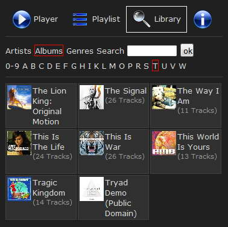

|
Der Nemp Webserver
|
Der Nemp Webserver bietet die Möglichkeit, von einem Browser
aus über ein Netzwerk auf den Player zuzugreifen.

Webserver aktivieren
Sie aktivieren den Webserver über das Menü "Tools -> Nemp
Webserver -> Aktivieren". Ist der Webserver aktiviert, wird im
Hauptfenster ein Symbol  eingeblendet.
eingeblendet.
Tipp: Probieren Sie das einfach mal
aus! Gehen Sie mit ihrem Smartphone in ihr WLAN, und geben Sie im
Handy-Browser die angegebene Adresse ein.
Je nach gewähltem Theme steht ein unterschiedlich
großer Funktionsumfang zur Verfügung.
- Im Theme "Default" stehen allen Usern alle Funktionen zur
Verfügung (sofern sie nicht in den User Berechtigungen verweigert
werden). Dieses Theme verwendet Javascript.
- Das Theme "No Javascript" bietet allen Usern (fast) alle
Funktionen, ohne die Verwendung von Javascript. Spulen im aktuellen
Titel und Lautstärkeregelung sind ohne Javascript nicht
möglich.
- Im Theme "Party" gibt es eingeschränkte Funktionen für normale User. Als Administrator hat man vollen Zugriff.
Tipp: Besorgen Sie sich für
Parties einen WLAN-Access-Point, mit dem Sie ein offenes lokales Netz
aufspannen. Dann müssen Sie ihren Gästen nicht das Passwort
für ihr "richtiges" WLAN geben. Näheres dazu finden Sie auf
www.gausi.de.
Zugriff von
außerhalb
Wenn Sie ihren Feunden Zugriff auf ihre Medienbibliothek geben wollen,
müssen Sie den Zugriff von außerhalb erlauben ("Zugriff nur vom LAN aus erlauben" deaktivieren).
Ihre Freunde benötigen dann die Zugangsdaten und ihre aktuelle IP-Adresse im Internet.
Zusätzlich müssen Sie ggf. in der
Konfiguration Ihres
Routers den eingestellten Port auf Ihre lokale IP-Adresse weiterleiten. Dadurch
ist sichergestellt, dass die HTTP-Anfragen aus "dem Internet" bei Nemp
auch ankommen und nicht am Router hängenbleiben.
Warnung!
Wenn Sie den Zugriff von außerhalb erlauben und kein Passwort
setzen, dann kann jeder auf Ihre gesamte Musiksammlung zugreifen. Sie
haben damit praktisch eine eigene "Internetseite" erstellt und bieten
auf dieser Seite hunderte oder gar tausende möglicherweise
urheberrechtlich geschützte Lieder zum Download an.
Das ist eine
sehr schlechte Idee!